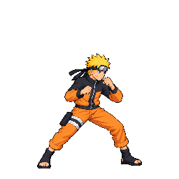

Diagnostic 48-color atlas packed in warning mode for review only. Several candidates fail strict scale, clipping, motion or contact checks. This is not a full-pack pass, user approval, merged art, or production deployment. The player uses the packer's native 256×256 cells and per-frame durations.
Use pause and frame stepping to inspect anatomy, foot position, contact and loop seams at actual packed scale. The in-game hit and hurt boxes still require Claude's validation.
